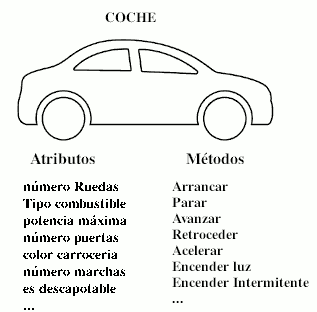
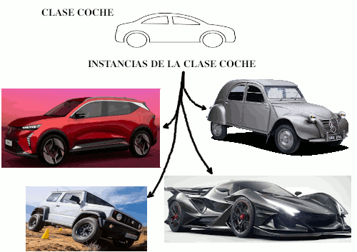
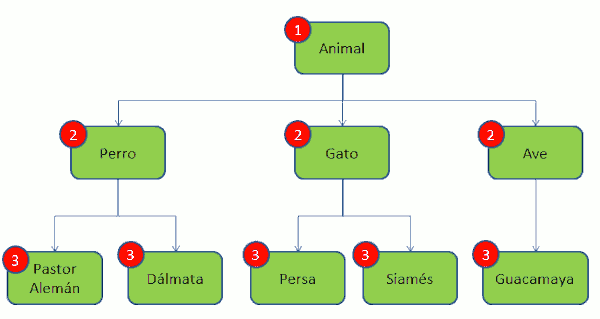
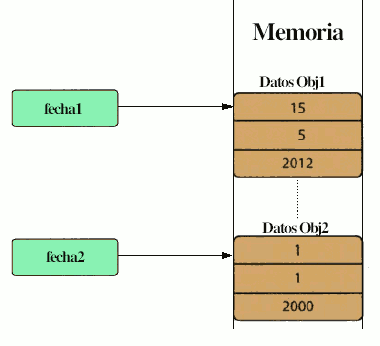
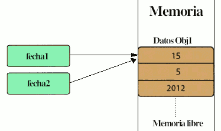

Escriure programes que usen classes i objectes es diu Programació Orientada a Objectes (POO - OOP). Tot programa Java consta d'almenys una classe.
La POO orientada a objectes tracta adaptar-se al mode de pensar de l'esser humà i no al de la màquina. L'element bàsic d'aquest paradigma de programació és una entitat denominada objecte (representa entitats del món real). Un objecte és la representació d'un concepte per a un programa, i conté tota la informació necessària per a abstraure aquest concepte.
- les dades que descriuen el seu estat i
- les operacions que poden modificar aquest estat, i determinen les capacitats de l'objecte.
En Java, la programació orientada a objectes gira sobre alguns conceptes clau: classes, objectes, atributs, mètodes i herència.
- Una classe és una plantilla des de la qual es poden crear objectes. Una classe és un tipus de dades no primitiu i creat per programador. Una classe és una abstracció d'una entitat del món real en la qual es defineixen les propietats que té aquesta entitat (atributs) i les accions que és capaç de realitzar (mètodes).
Segur que si dic la paraula "cotxe" al teu cap es forma una idea del que és un cotxe. Perquè aquesta idea, aquesta abstracció, és la classe "cotxe".
Tota classe té una sèrie de propietats (atributs): nombre de rodes, velocitat màxima, potència del motor, tipus de combustible, color de pintura, llarg, ample, alt, nombre de portes, nombre de places, capacitat del maleter, etc.
Tota classe té una sèrie d'accions que pot realitzar (mètodes): avançar, retrocedir, obrir la porta, arrancar, parar, posar el fre de mà, aparcar, encendre la llum, apagar la llum, posar l'intermitent, etc.
Així, una classe és una abstracció d'alguna cosa del món real en la qual es defineixen els seus atributs i els seus mètodes.
- Un objecte és una instància d'una classe, igual que una variable és una instància d'una mena de dada. Podem dir que una classe és com una plantilla a partir de la qual podrem crear (instanciar) objectes. Així, el Renault Scenic e-Tech iconic amb matrícula 0001-NAA és un objecte concret i únic de la classe COTXE. Els objectes tenen valors concrets per als atributs definits en la classe i podran realitzar les accions definides en els mètodes.
 - tribut: és una variable que forme part d'una classe. Una classe pot contindre tants atributs com es desitge i poden ser de qualsevol tipus, fins i tot objectes d'una altra classe.
- Método: es una función construida en una clase u objeto
- Mètode: és una funció construïda en una classe.
- Herència és el procés que consisteix a derivar una classe, anomenada classe derivada o filla, d'una altra, anomenada classe base o pare, i es poden utilitzar els atributs i mètodes de la classe base en la classe derivada sense necessitat de tornar-los a definir. Així, la classe Cotxe pot heretar de la classe Vehicles_De_Motor, sense necessitat de tornar a definir tots els atributs i mètodes.

Creació d'objectes: Instanciació
Un objecte ha de ser instanciat abans que puga ser utilitzat. Per a entendre com instanciar un objecte d'una classe i com anomenar als mètodes de la classe, ha de conéixer la Interfície de la classe (API de la classe), que els creadors de la classe fan pública. A continuació mostre la interfície de classe de la classe Data creada per mi:
Constructors:
- Data() --> crea un objecte Data amb data inicial 1 del 1 de 2000.
- Data (int dd, int mm, int aaaa) --> crea un object Data amb data dd / mm / aaaa
Mètodes:
- int getMes() --> torna el número del mes
- int getDia() --> torna el número del dia
- int getAny() --> torna el número de l'any
- boolean setDia(int dd) --> fica el dia de l'object Data a dd. Si dd és un valor no vàlid per al mes de la data, no canvia la data i torna false.
- boolean setMes( int mm ) --> fica el mes de l'object a mm. Si mm no és vàlid, no canvia res i torna false
- void setAny( int aaaa ) --> canvia a aaaa l'any de l'objecte Data
- String toString() --> torna un objecte de tipus String que conté una cadena amb el format: "25 de abril de 2017".
- boolean equals(Object obj) --> compara l'objecte Data amb altre objecte Data passat com paràmetre.
La instanciació d'un objecte consisteix en definir una referencia d'objecte (que mantindrà la direcció de l'objecte en la memòria) i cridar a un mètode especial de la classe anomenat constructor, que té el mateix nom que la classe. El treball del constructor és assignar valors inicials a les dades de classe. La sintaxi per a la instanciació d'un objecte és:
Classe nomObjecte = new ConstructorClasse(paràmetres);
Com la classe Data té dos constructors, podem crear objectes de tipus Data de dues formes diferents:
- Data fecha2 = new Data(); // crea l'objecte data1 amb valors inicials 01/01/2000
- Data fecha1 = new Data(15, 05, 2012); // crea l'objecte data2 amb els valors 15/05/2012
Al instanciar un objecte es declara l'objecte i se li fa apuntar a una zona de memòria on s'emmagatzema l'objecte. Direm que fecha1 i fecha2 són referències als objectes de Data, ja que fecha1 i fecha2 no contenen les dades en si mateixos, sinó que fan referència al lloc de la memòria on es troben.
Un objecte s'instància utilitzant el constructor de la classe. Una classe pot tindre diversos constructors.
És important comprendre que una referència d'un objecte i un objecte són coses distintes. L'objecte són les dades emmagatzemades en una posició de memòria. La referència és un element que apunta a l'objecte.
Crida a mètodes
Quan es crea una instància d'un objecte, podem utilitzar-lo trucant als seus mètodes. Un mètode pot tornar o no un valor del tipus que indica la paraula que va davant del nom del mètode. La paraula void significa que no torna cap valor. Per trucar a un mètode s'utilitza la notació:
nomObjecte.nomMètode(arg1, arg2, ...);
on primer apareix el nom de lobjecte, seguit d'un punt i el nom del mètode, afegint entre parèntesis els valors adequats per als arguments que tingui.
Així, si volem canviar l'any de l'objecte fecha2, farem la trucada següent al mètode setAny(int aaaa):
fecha2.setAny(2020);
Si vull mostrar per pantalla el dia de l'objecte fecha1 trucaré al mètode getDia(), que torna un enter:
System.out.prinln("Dia = " + fecha1.getDia()); // mostra: Dia = 15
I si vull mostrar la data completa:
System.out.println("Data: " + fecha1.toString()); // mostra: Data: 15 de maig de 2012
Referències no instanciades
Si una referència no és instanciada, el valor és null. Cal anar amb compte amb les referències no instanciades ja que pot donar problemes.
Data data3; // referència no instanciada. El seu valor es null. No fa referencia a ningú objecte
data3.setDia(23); // genera un error de compilació
Eliminació d'objectes
Java no ofereix suport per eliminar explícitament un objecte. A Java hi ha una eina (garbage collector) que s'encarrega d'alliberar memòria de forma automàtica dels objectes que no es tornaran a utilitzar. En el següent exemple, la referència fecha2 referenciarà el mateix objecte que fecha1, per tant l'objecte obj2 ja no és referenciat i no es podrà utilitzar. Java allibera de forma automàtica la memòria que ocupa aquest objecte de manera que podrà ser utilitzada per a altres coses.

fecha2 = fecha1; // ara fecha2 referencia al mateix objecte que fecha1.